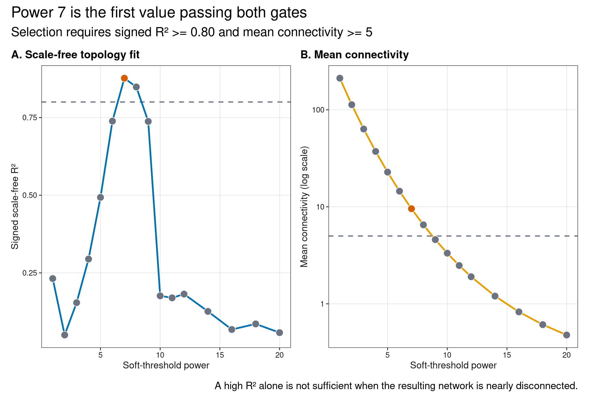
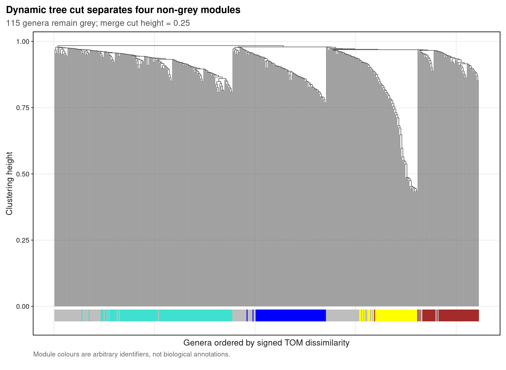
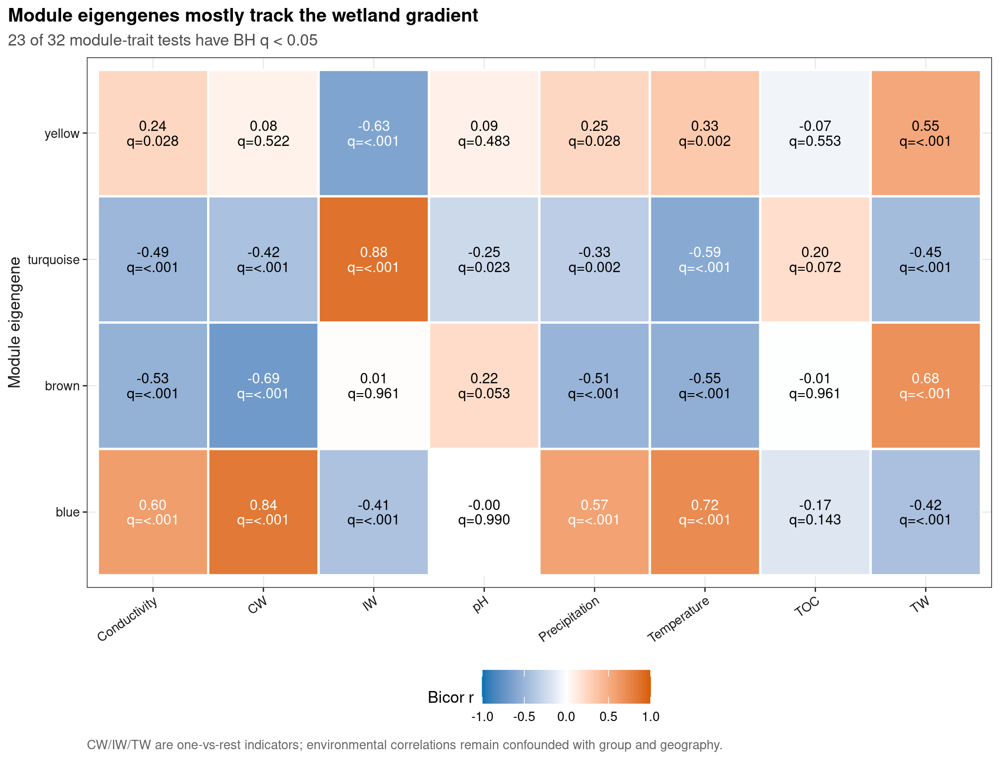
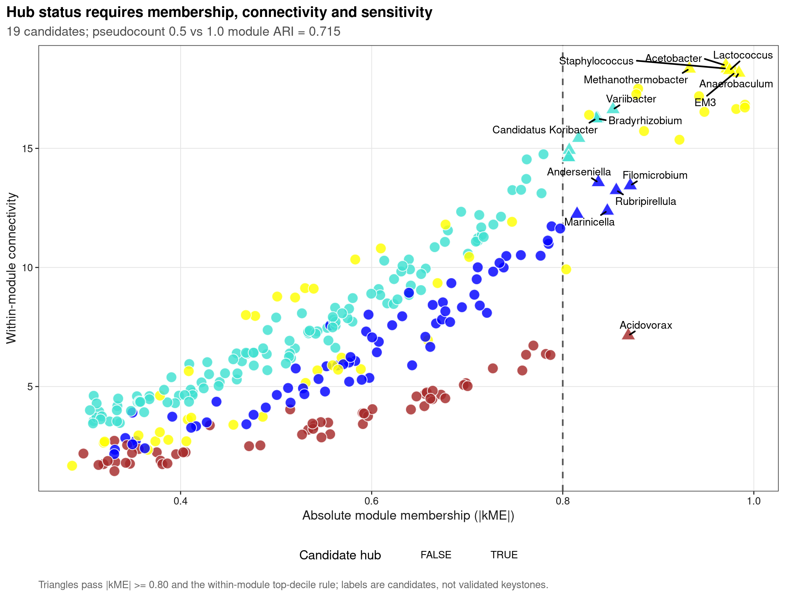

options(timeout = 600)
data_url <- "https://raw.githubusercontent.com/petemeng/microbiome-best-practices/3cb6a817e0c73ab7ecbec1cedc1ad80cbb9ecfaa/"
input_files <- c(
"data/small/environment.tsv",
"data/small/metadata.tsv",
"data/small/otutab.tsv",
"data/small/taxonomy.tsv"
)
for (path in input_files) {
dir.create(dirname(path), recursive = TRUE, showWarnings = FALSE)
if (!file.exists(path)) download.file(paste0(data_url, path), path, mode = "wb", quiet = TRUE)
}WGCNA 用于微生物组：模块、性状关联与候选 hub
WGCNA 模块是共变模式，不是生态功能单元
Langfelder & Horvath (2008)系统化了 weighted correlation network analysis：用 soft threshold 把 correlation 转为 adjacency，经 topological overlap 聚类得到模块，再以 module eigengene 关联外部性状。以下结果依次检查 soft threshold、module dendrogram、module–trait association 和候选 hub 的稳定性。
重要先给结论
WGCNA 可以把共同变化的 taxa 压缩成模块，但微生物 abundance 是组成数据，模块也容易重现分组、地理与批次结构。本页先做 prevalence/abundance filter，再用 CLR 与 signed bicor；module–trait p-value 在统一检验族内 BH 校正。Hub 只表示“在当前模块里与 eigengene 高度一致且连接较强”，不能直接写成功能核心菌或 keystone。
本页仍使用 CW、IW、TW 各 30 个真实样本。已知 genus reads 只占全部 reads 的一部分，因此 WGCNA 的 estimand 明确限定为“可命名且通过过滤的属级子群”，不会把模块结果外推到整张 ASV 表。
模块与分组高度相关，是发现还是重复描述？
如果先按组间差异筛菌，再用同一批菌构建模块并检验模块与分组的相关，分组信息已经参与了两次选择。这里使用不依赖分组标签的过滤，避免这种直接循环；但共同地理梯度仍可能主导模块。模块与 pH 相关且与 Group 相关，不能被当作两个独立机制。WGCNA 官方说明也不建议把差异筛选后的特征当作无监督网络的默认输入。
模块 eigengene 的正负号本身可翻转，不能把颜色或坐标方向当成跨队列身份。验证时要检查同一特征集合的共变结构是否保留，而不只是另一个队列也出现了“蓝色模块”。同样，达到某个 scale-free 拟合阈值只是选参依据，不证明真实群落服从该拓扑；若需要极高 power 才达标，应先看异常样本、分组结构与连接度是否被压得过低。
下载并读取本次分析的数据
需要 R，以及 WGCNA、ggdendro、ggplot2、ggrepel、knitr、patchwork、ragg、svglite。本次使用中国湿地的 OTU count 表、分类表和样本信息表，以及本次分析使用的实测环境变量或系统发育信息。
在一个新建的文件夹中运行以下代码，下载文件后按文中的顺序继续分析：
library(ggplot2)
library(WGCNA)
set.seed(20260737)
font_pub <- "sans"
pal_pub <- c(
blue = "#0072B2", orange = "#E69F00", green = "#009E73",
vermillion = "#D55E00", purple = "#CC79A7", sky = "#56B4E9",
yellow = "#F0E442", grey = "#6B7280"
)
scale_color_pub <- function(..., values = unname(pal_pub)) {
ggplot2::scale_color_manual(..., values = values)
}
scale_fill_pub <- function(..., values = unname(pal_pub)) {
ggplot2::scale_fill_manual(..., values = values)
}
theme_pub <- function(base_size = 10, base_family = font_pub) {
ggplot2::theme_bw(base_size = base_size, base_family = base_family) +
ggplot2::theme(
panel.grid.minor = ggplot2::element_blank(),
panel.grid.major = ggplot2::element_line(
colour = "#E6E6E6", linewidth = 0.25
),
axis.text = ggplot2::element_text(colour = "#1A1A1A"),
axis.title = ggplot2::element_text(colour = "#1A1A1A"),
axis.ticks = ggplot2::element_line(colour = "#1A1A1A", linewidth = 0.3),
plot.title.position = "plot",
plot.title = ggplot2::element_text(face = "bold", size = ggplot2::rel(1.15)),
plot.subtitle = ggplot2::element_text(colour = "#4D4D4D"),
plot.caption = ggplot2::element_text(colour = "#666666", hjust = 0),
strip.background = ggplot2::element_rect(
fill = "#F2F2F2", colour = "#B3B3B3", linewidth = 0.3
),
strip.text = ggplot2::element_text(face = "bold"),
legend.key = ggplot2::element_blank(), legend.position = "top"
)
}
save_pub <- function(
plot, file_base, width = 89, height = 70, units = "mm",
dpi = 600, write_svg = TRUE, write_tiff = TRUE,
base_family = font_pub
) {
dir.create(dirname(file_base), recursive = TRUE, showWarnings = FALSE)
ggplot2::ggsave(
paste0(file_base, ".pdf"), plot, width = width, height = height,
units = units, device = grDevices::cairo_pdf,
family = base_family, bg = "white"
)
if (write_svg) ggplot2::ggsave(
paste0(file_base, ".svg"), plot, width = width, height = height,
units = units, device = svglite::svglite, bg = "white"
)
ggplot2::ggsave(
paste0(file_base, ".png"), plot, width = width, height = height,
units = units, dpi = dpi, device = ragg::agg_png, bg = "white"
)
if (write_tiff) ggplot2::ggsave(
paste0(file_base, ".tiff"), plot, width = width, height = height,
units = units, dpi = dpi, device = ragg::agg_tiff,
compression = "lzw", bg = "white"
)
invisible(plot)
}从三件套生成 90 × 422 的命名属 CLR 矩阵
read_keyed_tsv <- function(path) {
x <- readr::read_tsv(
path, show_col_types = FALSE, progress = FALSE,
name_repair = "minimal", na = character()
)
ids <- as.character(x[[1L]])
stopifnot(!anyDuplicated(ids))
out <- as.data.frame(x[-1L], check.names = FALSE)
rownames(out) <- ids
out
}
otutab_raw <- read_keyed_tsv("data/small/otutab.tsv")
taxonomy <- read_keyed_tsv("data/small/taxonomy.tsv")
metadata <- read_keyed_tsv("data/small/metadata.tsv")
environment <- read_keyed_tsv("data/small/environment.tsv")
otutab <- as.matrix(data.frame(
lapply(otutab_raw, as.integer), check.names = FALSE
))
rownames(otutab) <- rownames(otutab_raw)
metadata$Group <- factor(metadata$Group, levels = c("CW", "IW", "TW"))
environment <- environment[rownames(metadata), , drop = FALSE]
rank_names <- c(
"Kingdom", "Phylum", "Class", "Order", "Family", "Genus", "Species"
)
clean_taxon <- function(x) {
x <- sub("^[A-Za-z]__", "", trimws(as.character(x)))
x[
is.na(x) | x == "" |
grepl(
"unclassified|unknown|unassigned|uncultured|metagenome",
x, ignore.case = TRUE
)
] <- NA_character_
x
}
taxonomy_clean <- as.data.frame(
lapply(taxonomy[rownames(otutab), rank_names], clean_taxon),
check.names = FALSE
)
known_genus <- !is.na(taxonomy_clean$Genus)
lineage_key <- apply(
taxonomy_clean[known_genus, rank_names[1:6], drop = FALSE], 1L,
function(x) paste(ifelse(is.na(x), "?", x), collapse = ";")
)
genus_counts <- rowsum(
otutab[known_genus, , drop = FALSE], lineage_key, reorder = FALSE
)
lineage_matrix <- do.call(
rbind, strsplit(rownames(genus_counts), ";", fixed = TRUE)
)
colnames(lineage_matrix) <- rank_names[1:6]
feature_ids <- make.unique(paste0("Genus:", lineage_matrix[, "Genus"]))
rownames(genus_counts) <- feature_ids
eligible <- rowMeans(genus_counts > 0) >= 0.20 & rowSums(genus_counts) >= 100
counts <- genus_counts[eligible, rownames(metadata), drop = FALSE]
make_clr <- function(pseudocount) {
log_values <- log2(t(counts) + pseudocount)
log_values - rowMeans(log_values)
}
dat_expr <- make_clr(0.5)
quality <- WGCNA::goodSamplesGenes(dat_expr, verbose = 0)
stopifnot(
nrow(otutab) == 13628L,
ncol(otutab) == 90L,
sum(otutab) == 1619670L,
nrow(dat_expr) == 90L,
ncol(dat_expr) == 422L,
quality$allOK,
identical(rownames(dat_expr), rownames(metadata)),
all(is.finite(dat_expr))
)
data.frame(
Samples = nrow(dat_expr),
NamedGenera = ncol(dat_expr),
RetainedAllReadFraction = sum(counts) / sum(otutab),
FailedSamples = sum(!quality$goodSamples),
FailedGenera = sum(!quality$goodGenes)
) Samples NamedGenera RetainedAllReadFraction FailedSamples FailedGenera
1 90 422 0.3613347 0 0下载完整 R 脚本。脚本包含数据下载、计算和图形导出。
首次使用时安装 R 包
install.packages(c(
"ggdendro", "ggplot2", "ggrepel", "patchwork", "ragg", "readr",
"scales", "svglite", "systemfonts", "WGCNA"
))WGCNA 是软阈值模块模型，不是另一种差异分析
将相关性转换为有符号邻接矩阵
对 taxon \(i,j\) 的 robust correlation \(r_{ij}\)，signed network 使用
\[ a_{ij}=\left(\frac{1+r_{ij}}{2}\right)^\beta, \]
其中 \(\beta\) 是 soft-threshold power。负相关被压向 0，强正相关保留较大权重；与 hard threshold 相比，不必把 r=0.59 与 r=0.60 切成无边/有边。
Soft-threshold 不是追逐最高 \(R^2\)
pickSoftThreshold() 给 scale-free topology fit 与 mean connectivity。只追求高 \(R^2\) 会选择过大的 power，把网络压得几乎没有连接。本页预先规定：选择第一个 signed R² >= 0.80 且 mean connectivity >= 5 的 power；若没有同时满足者，才在 connectivity 合格的候选中选择最高 \(R^2\)，并显式报告失败。
用拓扑重叠与动态剪切识别共同变化的模块
Topological overlap matrix（TOM）不仅看两个 taxa 是否直接相关，还看它们是否共享邻居。blockwiseModules() 在 1-TOM 层次树上 dynamic cut，并合并 eigengene correlation 高的模块。灰色（grey）节点表示没有进入任何稳定模块，不应硬塞进最近模块。
用第一主成分概括一个模块的丰度变化
Module eigengene 是模块 abundance profile 的第一主成分。它与 CW/IW/TW one-vs-rest 指示变量及预设环境因子做 correlation；所有 module × trait tests 组成一个 BH family。强 correlation 仍可能来自 group–environment 共线性，不能解释为该环境变量驱动模块。
候选枢纽节点应同时具备较高模块归属度与连接度
本页候选 hub 需同时满足：模块 membership |kME| >= 0.80，且 within-module connectivity 位于本模块前 10%。这比只按 degree 排名更清楚，但仍是数据驱动候选。功能验证、跨队列 preservation 和去除候选 taxon 后的模块稳定性才是升级证据。
深入：为什么 RNA-seq 的 WGCNA 代码不能原样搬到 16S 百分比
百分比总和固定会制造负依赖，零值又使 log transform 不可直接计算。本页用固定 0.5 replacement 做 CLR，并用 1.0 replacement 重跑全部模块作为 sensitivity。CLR correlation 仍依赖 zero replacement、filter 和 reference frame，因此 module assignment sensitivity 必须进入结果，而不是只在 Methods 里写一句“数据已标准化”。
从软阈值到模块，再关联实测性状
用双门槛选择 soft-threshold power
powers <- c(1:12, 14, 16, 18, 20)
soft_threshold <- WGCNA::pickSoftThreshold(
dat_expr,
powerVector = powers,
networkType = "signed",
corFnc = "bicor",
corOptions = list(use = "p", maxPOutliers = 0.10),
verbose = 0
)
power_table <- soft_threshold$fitIndices
eligible_power <- with(
power_table,
Power[SFT.R.sq >= 0.80 & mean.k. >= 5]
)
if (length(eligible_power)) {
selected_power <- min(eligible_power)
power_gate <- "PASS"
} else {
connectivity_ok <- power_table$mean.k. >= 5
stopifnot(any(connectivity_ok))
selected_power <- power_table$Power[
which.max(ifelse(connectivity_ok, power_table$SFT.R.sq, -Inf))
]
power_gate <- "FALLBACK"
}
selected_power_row <- power_table[power_table$Power == selected_power, ]
data.frame(
SelectedPower = selected_power,
SignedR2 = selected_power_row$SFT.R.sq,
MeanConnectivity = selected_power_row$mean.k.,
Gate = power_gate
) Power SFT.R.sq slope truncated.R.sq mean.k. median.k. max.k.
1 1 0.2320 14.30 0.7980 212.000 212.0000 222.00
2 2 0.0501 -3.55 0.7750 113.000 113.0000 129.00
3 3 0.1540 -3.02 0.8280 63.400 62.7000 80.80
4 4 0.2950 -2.40 0.8920 37.200 36.4000 53.50
5 5 0.4930 -1.77 0.9170 22.800 21.8000 37.00
6 6 0.7380 -1.66 0.8660 14.500 13.5000 27.50
7 7 0.8770 -1.87 0.9190 9.560 8.5500 22.50
8 8 0.8480 -1.94 0.8390 6.520 5.5700 19.30
9 9 0.7370 -2.04 0.6760 4.590 3.6600 17.10
10 10 0.1760 -3.16 -0.0526 3.330 2.4400 15.50
11 11 0.1700 -3.75 -0.0165 2.480 1.6500 14.20
12 12 0.1820 -3.62 -0.0130 1.900 1.1200 13.30
13 14 0.1260 -2.64 0.0325 1.200 0.5500 11.90
14 16 0.0678 -1.74 0.1310 0.826 0.2730 11.00
15 18 0.0857 -1.36 0.0857 0.610 0.1430 10.30
16 20 0.0577 -1.59 0.1650 0.477 0.0776 9.67
SelectedPower SignedR2 MeanConnectivity Gate
1 7 0.8765043 9.562958 PASS构建 signed TOM、识别并合并模块
set.seed(20260737)
wgcna_fit <- WGCNA::blockwiseModules(
dat_expr,
power = selected_power,
networkType = "signed",
TOMType = "signed",
corType = "bicor",
maxPOutliers = 0.10,
deepSplit = 2,
minModuleSize = 20,
mergeCutHeight = 0.25,
pamRespectsDendro = FALSE,
numericLabels = TRUE,
randomSeed = 20260737L,
nThreads = 4,
verbose = 0
)
module_colours <- WGCNA::labels2colors(wgcna_fit$colors)
module_eigengenes <- WGCNA::orderMEs(WGCNA::moduleEigengenes(
dat_expr,
colors = module_colours,
excludeGrey = TRUE
)$eigengenes)
module_sizes <- as.data.frame(table(module_colours), stringsAsFactors = FALSE)
names(module_sizes) <- c("Module", "Genera")
stopifnot(
length(module_colours) == ncol(dat_expr),
ncol(module_eigengenes) >= 2L,
all(rownames(module_eigengenes) == rownames(dat_expr)),
sum(module_sizes$Genera) == ncol(dat_expr)
)
module_sizes Module Genera
1 blue 72
2 brown 57
3 grey 115
4 turquoise 127
5 yellow 51Module eigengene–trait correlation 与统一 BH
trait_data <- data.frame(
CW = as.integer(metadata$Group == "CW"),
IW = as.integer(metadata$Group == "IW"),
TW = as.integer(metadata$Group == "TW"),
pH = as.numeric(environment$pH),
TOC = as.numeric(environment$TOC),
Conductivity = as.numeric(environment$Conductivity),
Temperature = as.numeric(environment$Temperature),
Precipitation = as.numeric(environment$Precipitation),
row.names = rownames(metadata),
check.names = FALSE
)
module_trait_r <- WGCNA::bicor(
module_eigengenes,
trait_data,
use = "pairwise.complete.obs",
maxPOutliers = 0.10,
robustY = FALSE
)
module_trait_p <- WGCNA::corPvalueStudent(
module_trait_r, nSamples = nrow(dat_expr)
)
module_trait_q <- matrix(
stats::p.adjust(module_trait_p, method = "BH"),
nrow = nrow(module_trait_p),
dimnames = dimnames(module_trait_p)
)
module_trait_ledger <- expand.grid(
Module = rownames(module_trait_r),
Trait = colnames(module_trait_r),
stringsAsFactors = FALSE
)
module_trait_ledger$Correlation <- as.vector(module_trait_r)
module_trait_ledger$PValue <- as.vector(module_trait_p)
module_trait_ledger$QValue <- as.vector(module_trait_q)
module_trait_ledger$Significant <- module_trait_ledger$QValue < 0.05
data.frame(
Modules = nrow(module_trait_r),
Traits = ncol(module_trait_r),
Tests = length(module_trait_p),
BHSignificant = sum(module_trait_q < 0.05)
) Modules Traits Tests BHSignificant
1 4 8 32 23筛选候选枢纽节点，并检查伪计数的影响
adjacency_matrix <- WGCNA::adjacency(
dat_expr,
power = selected_power,
type = "signed",
corFnc = "bicor",
corOptions = list(use = "p", maxPOutliers = 0.10)
)
module_membership <- WGCNA::signedKME(
dat_expr,
module_eigengenes,
corFnc = "bicor",
corOptions = 'use="p", maxPOutliers=0.1'
)
hub_ledger <- data.frame(
FeatureID = colnames(dat_expr),
DisplayTaxon = sub("Genus:", "", colnames(dat_expr), fixed = TRUE),
Module = module_colours,
stringsAsFactors = FALSE
)
hub_ledger$WithinConnectivity <- vapply(
seq_len(ncol(dat_expr)),
function(index) {
sum(adjacency_matrix[index, module_colours == module_colours[[index]]]) - 1
},
numeric(1)
)
membership_columns <- match(
paste0("kME", hub_ledger$Module), colnames(module_membership)
)
hub_ledger$KME <- as.numeric(module_membership[cbind(
seq_len(nrow(hub_ledger)), membership_columns
)])
hub_ledger$CandidateHub <- with(
hub_ledger,
Module != "grey" & abs(KME) >= 0.80 &
ave(
WithinConnectivity, Module,
FUN = function(x) x >= stats::quantile(x, 0.90)
)
)
set.seed(20260737)
wgcna_pseudocount_one <- WGCNA::blockwiseModules(
make_clr(1.0),
power = selected_power,
networkType = "signed",
TOMType = "signed",
corType = "bicor",
maxPOutliers = 0.10,
deepSplit = 2,
minModuleSize = 20,
mergeCutHeight = 0.25,
pamRespectsDendro = FALSE,
numericLabels = TRUE,
randomSeed = 20260737L,
nThreads = 4,
verbose = 0
)
module_colours_pc_one <- WGCNA::labels2colors(
wgcna_pseudocount_one$colors
)
adjusted_rand <- function(a, b) {
contingency <- table(a, b)
choose_two <- function(x) x * (x - 1) / 2
n <- sum(contingency)
index <- sum(choose_two(contingency))
row_index <- sum(choose_two(rowSums(contingency)))
column_index <- sum(choose_two(colSums(contingency)))
expected <- row_index * column_index / choose_two(n)
(index - expected) / (0.5 * (row_index + column_index) - expected)
}
pseudocount_ari <- adjusted_rand(
module_colours, module_colours_pc_one
)
pair_coclustering_agreement <- mean(
outer(module_colours, module_colours, "==") ==
outer(module_colours_pc_one, module_colours_pc_one, "==")
)
data.frame(
CandidateHubs = sum(hub_ledger$CandidateHub),
Pseudocount05Modules = length(setdiff(unique(module_colours), "grey")),
Pseudocount10Modules = length(setdiff(unique(module_colours_pc_one), "grey")),
AdjustedRand = pseudocount_ari,
PairCoclusteringAgreement = pair_coclustering_agreement
) CandidateHubs Pseudocount05Modules Pseudocount10Modules AdjustedRand
1 19 4 5 0.7149369
PairCoclusteringAgreement
1 0.9050111模块、性状和 hub 的结论边界
wgcna_audit <- data.frame(
Dimension = c(
"Composition", "Taxonomic coverage", "Soft power", "Grey module",
"Trait family", "Confounding", "Hub", "Sensitivity"
),
FragilePractice = c(
"WGCNA on percentages",
"Pretend genus table covers all reads",
"Pick highest scale-free R2",
"Force every taxon into a module",
"Report nominal p-values",
"Read module-trait r as mechanism",
"Rank degree only",
"Show one zero replacement"
),
UpgradedContract = c(
"Pre-filtered CLR with declared replacement",
"Report all-read denominator coverage",
"R2 plus connectivity gate",
"Retain and report grey fraction",
"One BH family across module × trait",
"Design and collinearity boundary",
"|kME| plus within-module connectivity",
"Refit modules and report ARI"
),
stringsAsFactors = FALSE
)
knitr::kable(wgcna_audit, caption = "Microbiome WGCNA audit contract")| Dimension | FragilePractice | UpgradedContract |
|---|---|---|
| Composition | WGCNA on percentages | Pre-filtered CLR with declared replacement |
| Taxonomic coverage | Pretend genus table covers all reads | Report all-read denominator coverage |
| Soft power | Pick highest scale-free R2 | R2 plus connectivity gate |
| Grey module | Force every taxon into a module | Retain and report grey fraction |
| Trait family | Report nominal p-values | One BH family across module × trait |
| Confounding | Read module-trait r as mechanism | Design and collinearity boundary |
| Hub | Rank degree only | |kME| plus within-module connectivity |
| Sensitivity | Show one zero replacement | Refit modules and report ARI |
当前主模型选择 power 7（signed \(R^2\) = 0.877，mean connectivity = 9.56），得到 4 个非 grey 模块，115/422 个属未分配。23/32 个预设 module–trait tests 在 BH 后达到 0.05；这些强信号大多同时追踪 wetland group 与相关环境梯度，不能拆成独立机制。
0.5 与 1.0 replacement 的 module assignment adjusted Rand index 为 0.715，说明总体结构较接近但并非完全不变。候选 hub 共 19 个，正文与图中坚持使用 candidate，而不改写为已验证 keystone。
把模块关系与候选hub分开解释
图 1：soft-threshold 双门槛
r2_panel <- ggplot(
power_table,
aes(x = Power, y = SFT.R.sq)
) +
geom_hline(yintercept = 0.80, linetype = 2, colour = pal_pub[["grey"]]) +
geom_line(colour = pal_pub[["blue"]], linewidth = 0.7) +
geom_point(
aes(fill = Power == selected_power),
shape = 21, size = 2.8, colour = "white", stroke = 0.35
) +
scale_fill_manual(values = c("FALSE" = pal_pub[["grey"]], "TRUE" = pal_pub[["vermillion"]]), guide = "none") +
labs(
title = "A. Scale-free topology fit",
x = "Soft-threshold power", y = "Signed scale-free R²"
) +
theme_pub(base_size = 8.2)
connectivity_panel <- ggplot(
power_table,
aes(x = Power, y = mean.k.)
) +
geom_hline(yintercept = 5, linetype = 2, colour = pal_pub[["grey"]]) +
geom_line(colour = pal_pub[["orange"]], linewidth = 0.7) +
geom_point(
aes(fill = Power == selected_power),
shape = 21, size = 2.8, colour = "white", stroke = 0.35
) +
scale_fill_manual(values = c("FALSE" = pal_pub[["grey"]], "TRUE" = pal_pub[["vermillion"]]), guide = "none") +
scale_y_log10() +
labs(
title = "B. Mean connectivity",
x = "Soft-threshold power", y = "Mean connectivity (log scale)"
) +
theme_pub(base_size = 8.2)
soft_threshold_plot <- patchwork::wrap_plots(
r2_panel, connectivity_panel, nrow = 1L
) +
patchwork::plot_annotation(
title = sprintf("Power %d is the first value passing both gates", selected_power),
subtitle = "Selection requires signed R² >= 0.80 and mean connectivity >= 5",
caption = "A high R² alone is not sufficient when the resulting network is nearly disconnected."
)
save_pub(
soft_threshold_plot, "figures/37-soft-threshold",
width = 180, height = 122
)
soft_threshold_plot
图 2：展示拓扑重叠聚类树与模块划分
gene_tree <- wgcna_fit$dendrograms[[1L]]
block_genes <- wgcna_fit$blockGenes[[1L]]
dendrogram_data <- ggdendro::dendro_data(
stats::as.dendrogram(gene_tree), type = "rectangle"
)
ordered_gene_index <- block_genes[gene_tree$order]
ordered_modules <- module_colours[ordered_gene_index]
module_strip <- data.frame(
X = seq_along(ordered_modules),
Y = -0.035 * max(dendrogram_data$segments$y),
Module = ordered_modules,
stringsAsFactors = FALSE
)
dendrogram_plot <- ggplot() +
geom_segment(
data = dendrogram_data$segments,
aes(x = x, y = y, xend = xend, yend = yend),
colour = "#4D4D4D", linewidth = 0.25
) +
geom_tile(
data = module_strip,
aes(x = X, y = Y, fill = Module),
width = 1.05, height = 0.045 * max(dendrogram_data$segments$y)
) +
scale_fill_identity() +
coord_cartesian(clip = "off") +
labs(
title = "Dynamic tree cut separates four non-grey modules",
subtitle = sprintf(
"%d genera remain grey; merge cut height = 0.25",
sum(module_colours == "grey")
),
x = "Genera ordered by signed TOM dissimilarity",
y = "Clustering height",
caption = "Module colours are arbitrary identifiers, not biological annotations."
) +
theme_pub(base_size = 8.5) +
theme(
panel.grid = element_blank(),
axis.text.x = element_blank(),
axis.ticks.x = element_blank(),
legend.position = "none",
plot.margin = margin(6, 6, 12, 6)
)
save_pub(
dendrogram_plot, "figures/37-module-dendrogram",
width = 180, height = 132
)
dendrogram_plot
图 3：Module–trait heatmap 同时显示 r 与 BH q
module_trait_ledger$ModuleLabel <- sub("^ME", "", module_trait_ledger$Module)
module_trait_ledger$Label <- sprintf(
"%.2f\nq=%s",
module_trait_ledger$Correlation,
ifelse(
module_trait_ledger$QValue < 0.001,
"<.001", sprintf("%.3f", module_trait_ledger$QValue)
)
)
module_trait_ledger$TextColour <- ifelse(
abs(module_trait_ledger$Correlation) >= 0.55, "white", "black"
)
module_trait_plot <- ggplot(
module_trait_ledger,
aes(x = Trait, y = ModuleLabel, fill = Correlation)
) +
geom_tile(colour = "white", linewidth = 0.55) +
geom_text(
aes(label = Label, colour = TextColour),
family = font_pub, size = 2.55, lineheight = 0.88
) +
scale_colour_identity() +
scale_fill_gradient2(
low = pal_pub[["blue"]], mid = "white", high = pal_pub[["vermillion"]],
midpoint = 0, limits = c(-1, 1)
) +
labs(
title = "Module eigengenes mostly track the wetland gradient",
subtitle = sprintf(
"%d of %d module-trait tests have BH q < 0.05",
sum(module_trait_q < 0.05), length(module_trait_q)
),
x = NULL, y = "Module eigengene", fill = "Bicor r",
caption = "CW/IW/TW are one-vs-rest indicators; environmental correlations remain confounded with group and geography."
) +
theme_pub(base_size = 8.2) +
theme(
axis.text.x = element_text(angle = 35, hjust = 1),
legend.position = "bottom"
)
save_pub(
module_trait_plot, "figures/37-module-trait",
width = 180, height = 138
)
module_trait_plot
图 4：检查候选枢纽节点与模块划分的稳定性
plot_hubs <- hub_ledger[hub_ledger$Module != "grey", ]
label_hubs <- head(
plot_hubs[
order(!plot_hubs$CandidateHub, -abs(plot_hubs$KME), -plot_hubs$WithinConnectivity),
],
14L
)
hub_plot <- ggplot(
plot_hubs,
aes(
x = abs(KME), y = WithinConnectivity,
fill = Module, shape = CandidateHub
)
) +
geom_vline(xintercept = 0.80, linetype = 2, colour = "#555555") +
geom_point(
size = 3, alpha = 0.82, colour = "white", stroke = 0.4
) +
ggrepel::geom_text_repel(
data = label_hubs,
aes(label = DisplayTaxon),
family = font_pub, size = 2.45, min.segment.length = 0,
max.overlaps = Inf, show.legend = FALSE
) +
scale_fill_identity() +
scale_shape_manual(values = c("FALSE" = 21, "TRUE" = 24)) +
labs(
title = "Hub status requires membership, connectivity and sensitivity",
subtitle = sprintf(
"%d candidates; pseudocount 0.5 vs 1.0 module ARI = %.3f",
sum(hub_ledger$CandidateHub), pseudocount_ari
),
x = "Absolute module membership (|kME|)",
y = "Within-module connectivity",
shape = "Candidate hub",
caption = "Triangles pass |kME| >= 0.80 and the within-module top-decile rule; labels are candidates, not validated keystones."
) +
theme_pub(base_size = 8.3) +
theme(legend.position = "bottom")
save_pub(
hub_plot, "figures/37-hub-sensitivity",
width = 180, height = 138
)
hub_plot
result_dir <- "results/37-microbial-wgcna"
dir.create(result_dir, recursive = TRUE, showWarnings = FALSE)
utils::write.table(
power_table,
file.path(result_dir, "soft-threshold.tsv"),
sep = "\t", quote = FALSE, row.names = FALSE
)
utils::write.table(
module_sizes,
file.path(result_dir, "module-sizes.tsv"),
sep = "\t", quote = FALSE, row.names = FALSE
)
module_trait_ledger_export <- module_trait_ledger
module_trait_ledger_export$Label <- gsub(
"\n", "; ", module_trait_ledger_export$Label, fixed = TRUE
)
utils::write.table(
module_trait_ledger_export,
file.path(result_dir, "module-trait-ledger.tsv"),
sep = "\t", quote = FALSE, row.names = FALSE
)
utils::write.table(
hub_ledger,
file.path(result_dir, "hub-ledger.tsv"),
sep = "\t", quote = FALSE, row.names = FALSE
)
expected_bases <- c(
"figures/37-soft-threshold",
"figures/37-module-dendrogram",
"figures/37-module-trait",
"figures/37-hub-sensitivity"
)
expected_files <- as.vector(outer(
expected_bases, c(".pdf", ".svg", ".png", ".tiff"), paste0
))
stopifnot(
all(file.exists(expected_files)),
as.character(utils::packageVersion("WGCNA")) == "1.74",
selected_power == 7L,
power_gate == "PASS",
length(setdiff(unique(module_colours), "grey")) == 4L,
nrow(module_trait_ledger) == 32L,
pseudocount_ari >= 0 && pseudocount_ari <= 1
)
注意常见坑：审稿人会追问的八件事
- 直接输入 relative abundance：closure 会把模块结构带偏；至少使用明确的 log-ratio 方案并做 sensitivity。
- 样本太少、taxa 太多：模块会被单个异常样本主导；先检查
goodSamplesGenes()和 sample tree。
- 只看 scale-free R²：同时报告 mean connectivity 与 power 选择规则。
- 删除 grey taxa 不报告：灰色比例是模块可分性的证据。
- 每个热图格单独看 p<0.05：统一调整 module × trait 检验族。
- binary trait 直接 robust bicor：本页对 trait 端设
robustY=FALSE，避免二元变量的 robust treatment 失真。
- 把 module–trait correlation 写成驱动机制：先审计 group、空间、批次和环境共线性。
- 把 hub 写成功能核心菌：需跨队列 module preservation 与实验验证。
报告模块识别与性状关联的方法与限制
Genus-level counts were aggregated by complete lineage and filtered independently of traits (prevalence ≥20% and total abundance ≥100 reads), retaining 422 named genera across 90 samples. Counts were transformed using a 0.5-count replacement followed by sample-wise centred log-ratio transformation. A signed WGCNA network was constructed with biweight midcorrelation (
maxPOutliers=0.10). The soft-threshold power was selected as the first value satisfying signed scale-free topology R² ≥0.80 and mean connectivity ≥5 (power 7). Modules were detected from signed topological overlap using dynamic tree cutting (deepSplit=2, minimum module size 20) and merged at eigengene dissimilarity 0.25. Module eigengenes were correlated with three one-vs-rest wetland indicators and five prespecified environmental traits; all 32 tests were adjusted together using Benjamini–Hochberg. Candidate hubs required |kME| ≥0.80 and within-module connectivity in the module-specific upper decile. The full network was refitted with a 1.0-count replacement, and assignment sensitivity was summarized by adjusted Rand index. Random seeds were fixed at 20260737.
将模块识别与性状关联用于自己的研究
otutab <- read_keyed_tsv("your_data/otutab.tsv")
taxonomy <- read_keyed_tsv("your_data/taxonomy.tsv")
metadata <- read_keyed_tsv("your_data/metadata.tsv")
environment <- read_keyed_tsv("your_data/environment.tsv")
# 必改：分组列和预设连续性状；先按 SampleID 对齐。
metadata$Group <- factor(metadata$YourGroupColumn)
trait_columns <- c("YourTrait1", "YourTrait2")
# 必须在看模块前固定：
prevalence_cutoff <- 0.20
total_read_cutoff <- 100L
pseudocount <- 0.5
min_module_size <- 20L若数据有 treatment、site、subject、time 或 batch，应先确认这些因素可识别；必要时在变换后做设计合适的 residualization，并把原始与调整后的 module preservation 一起报告。若 genus 注释覆盖低，可在 Family 或 ASV 层运行，但不同 rank 是不同 feature universe，不能直接比较 module 名称。
参考
- Langfelder P, Horvath S. WGCNA: an R package for weighted correlation network analysis. BMC Bioinformatics. 2008;9:559. https://doi.org/10.1186/1471-2105-9-559
- Zhang B, Horvath S. A general framework for weighted gene co-expression network analysis. Statistical Applications in Genetics and Molecular Biology. 2005;4:Article17. https://doi.org/10.2202/1544-6115.1128
- Gloor GB, Macklaim JM, Pawlowsky-Glahn V, Egozcue JJ. Microbiome datasets are compositional: and this is not optional. Frontiers in Microbiology. 2017;8:2224. https://doi.org/10.3389/fmicb.2017.02224
- An J, Liu C, Wang Q, et al. Soil bacterial community structure in Chinese wetlands. Geoderma. 2019;337:290–299. https://doi.org/10.1016/j.geoderma.2018.09.035
- Liu C, Cui Y, Li X, Yao M. microeco: an R package for data mining in microbial community ecology. FEMS Microbiology Ecology. 2021;97:fiaa255. https://doi.org/10.1093/femsec/fiaa255
- WGCNA 1.74 CRAN documentation. https://cran.r-project.org/package=WGCNA